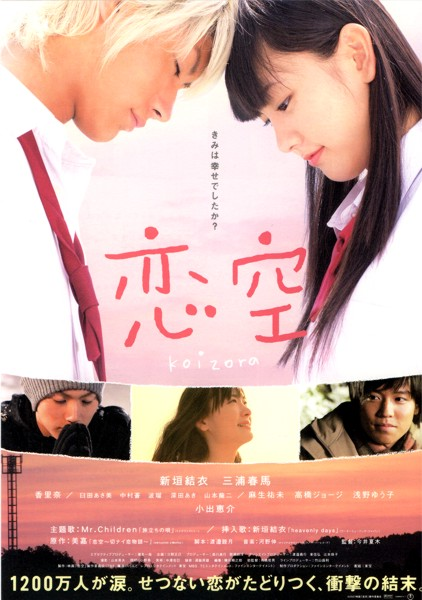
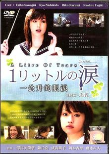

Lançamentos
|

|
Koizora
Elenco:
- Mizusawa Elena (Tahara Mika)
- Seto Koji (Hiro)
- Abe Tsuyoshi (Yu)
- Aoi (Aya)
- Miura Shohei (Nozomu)
- Haru (Saki)
- Nagayama Kento (Kato Tatsuya)
Sinopse:
Mika, passa a receber ligações de um misterioso menino. Dia após dia, ligação após ligação, ele vai conquistando o coração de Mika. Mika e Hiro comecam a viver uma grande paixão, mas um dia ele a abandona sem motivo.
[Trailer]
|
|

|
1 Litre No Namida (1 Litro de Lágrimas)
Elenco:
- Sawajiri Erika (Ikeuchi Aya)
- Yakushimaru Hiroko (Ikeuchi Shioka)
- Nishikido Ryo (Asou Haruto)
- Jinnai Takanori (Ikeuchi Mizuo)
- Fujiki Naohito (Mizuno Hiroshi)
- Narumi Riko (Ikeuchi Ako)
- Sanada Yuma (Ikeuchi Hiroki)
Sinopse:
Baseado em fatos reais, "Ichi Rittoru no Namida" conta a luta de Aya e de sua família contra todos os obstáculos impostos pela doença, relatada através de trechos do diário escrito pela real personagem, Kitou Aya, e que mais tarde, tornou-se um livro de grande sucesso, vendendo mais de 1 milhão de cópias no Japão.
Uma história de luta e sobretudo, uma lição de vida.
Total de episódios: 11 + especial
[Trailer]
|
|